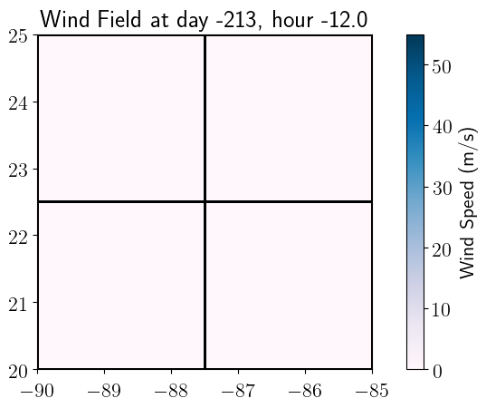

< < < Index > > >

Image source: /Users/hudaqureshi/surge-examples/square_basin/_plots/frame0000fig4.png
Other figures at this time: Surface speed Pressure Wind Speed Bathymetry All Figures
Other frames: 0 1 2 3 4 All Frames